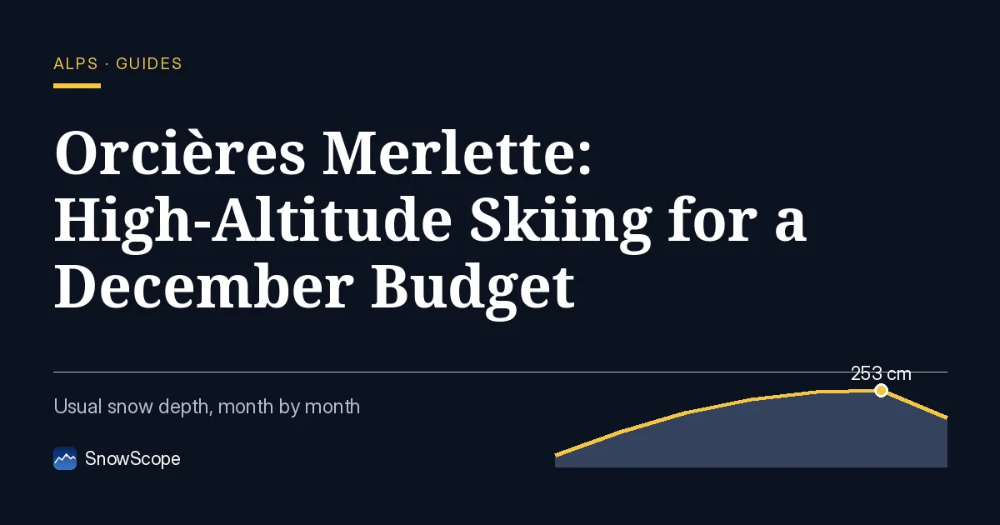

Orcières Merlette: High-Altitude Skiing for a December Budget
If you want to ski in December without spending too much, Orcières Merlette is a solid choice because its lowest lifts start high at 1826 m. This high starting point helps keep the snow on the ground even in early winter when other places are still green.
See the live snow forecast for Orcières Merlette in the SnowScope appSnow depth, powder alerts and the 3D map, free.
The short answer for December
Orcières Merlette is located in the Hautes-Alpes and features a mapped ski area with 49 km of runs and 26 mapped lifts. It is a modest resort, but its height is a major advantage for early season trips. Our snow history of 46 past winters shows that the conditions improve quickly during the month.
In the first week of December, there is a 30 % share of winters with 30 cm or more of snow at the base. By the final week of the month, this rises to 74 % of past winters. If you are looking for deeper snow, the mid-mountain at 2278 m has 50 cm or more in 78 % of past winters during the last week of December.

Base and top: where the snow is
The resort sits between 1826 m and 2731 m, giving it a vertical drop of 905 m. In a usual December, the snow depth at the base is 33 cm. On 15 December, the usual depth is 31 cm at the bottom and 104 cm at the top of the lifts. This high altitude ensures that the upper slopes are almost always ready for skiing.
Our snow history shows that the top of the lifts has 30 cm or more of snow in 100 % of past winters from 8 December onwards. However, some years are thinner than others. In about 1 winter in 10, the depth at the base can be below 9 cm in December. The thinnest December at the base was in 2015-16, when there was only 2 cm of snow.
The cost side
One of the best things about this resort is the price of the lift pass. You can buy an adult 6-day Pass Horizon on the official site from 227 EUR. This is a good price for a week of skiing in the French Alps, especially since the pass also includes access to the pool and the ice rink.
By staying at a resort with a high base like this one, you reduce the risk of having to use transport to reach the snow. You can spend your budget on the trip itself rather than expensive daily travel. The 49 km of mapped runs provide enough variety for a budget-friendly week on the slopes.
Orcières or Les Orres
It is helpful to compare Orcières Merlette with Les Orres nearby. Les Orres has a slightly larger mapped ski area with 54 km of runs and 21 mapped lifts. However, its lowest lift is at 1554 m, which is much lower than Orcières. This difference affects the snow depth at the bottom of the resort.
In a usual December, the base at Les Orres has 23 cm of snow, while Orcières has 33 cm. On 15 December, the usual depth at the Les Orres base is 22 cm. Prices at Les Orres vary by date; an adult 1-day pass costs 34 EUR in early December, 38.50 EUR in mid-December, and 45.50 EUR after 19 December. While Les Orres is a good option, Orcières offers a higher starting point for your ski day.
First snow and how winters have changed
Our snow history shows that the first lasting snow usually arrives at the top of Orcières on 14 October and at the base on 3 November. Interestingly, December snow has actually increased here over time. In the first 15 winters of our records (1980-81 to 1994-95), the December average at the base was 30 cm. In the last 15 winters (2011-12 to 2025-26), this average rose to 35 cm.
As of 13 November 2026, there is currently 0 cm of snow at the base and 12 cm at the top. The forecast for the next 7 days suggests 20 cm of new snow at the base and 70 cm at the top. Looking further ahead, the two-week outlook for the mid-mountain and above shows a range of 70 cm to 106 cm of new snow, which is a positive sign for the start of the season.
Tips for skiers
- Book the 6-day Pass Horizon on the official site from 227 EUR to get the pool and ice rink access included.
- Aim for the week of 22-28 December if you want the best chance of a 50 cm snow base, which happens in 48 % of past winters.
- Stick to the runs above the mid-mountain height of 2278 m if the lower slopes are thin, as the top has 30 cm or more in 100 % of past winters after 8 December.
- Check the avalanche bulletin before skiing off-piste, especially since the usual season peak at the top is 307 cm.
More maps (external sites)
References and credits
- Orcières, official ticketing, winter 2026-27 pass.orcieres.com/en/ticketing
- Les Orres, official ski pass prices 2026-27 www.lesorres.com/forfaits-de-ski
- SnowScope, December snow at three heights and today's snow map snowscope.app/
About these numbers
Snow numbers: SnowScope snow history, 46 past winters (1980-81 to 2025-26) at three heights of each resort (a model of the past corrected for height: an estimate for an area, not resort measurements); December figures computed from the daily depths of those winters. Snow now and the two-week outlook: SnowScope forecasts (outlook from ECMWF and GFS, a range, not a promise). Lifts and runs: OpenSkiMap mapping. Prices: the official resort pages listed below, read on 2026-11-13; prices can change, check before booking.
Official avalanche bulletins: Météo-France – Bulletin d'estimation du risque d'avalanche
Cite this report
For research, teaching or the press: the numbers and charts are free to reuse under CC BY 4.0 with this citation.
SnowScope (2026), Orcières Merlette: High-Altitude Skiing for a December Budget, https://snowscope.app/blog/en/2026/11/orcieres-merlette-december-ski-budget-snow-2026.html, accessed 2026-11-14
SnowScope (Atlas Labs). (2026, November 14). Orcières Merlette: High-Altitude Skiing for a December Budget. SnowScope snow reports. https://snowscope.app/blog/en/2026/11/orcieres-merlette-december-ski-budget-snow-2026.html
BibTeX
@misc{snowscope2026orcieresmerlettedecember,
author = {{SnowScope (Atlas Labs)}},
title = {Orcières Merlette: High-Altitude Skiing for a December Budget},
year = {2026},
month = nov,
howpublished = {\url{https://snowscope.app/blog/en/2026/11/orcieres-merlette-december-ski-budget-snow-2026.html}},
note = {Published 2026-11-14 19:21 UTC; accessed 2026-11-14}
}· CC BY 4.0 · Methods, data and tools →
Orcières Merlette: snow and temperature by height, this winter vs last (tools) →
Follow Orcières Merlette
Free: a message when fresh snow is coming, and the forecast every morning.
More snow reports

Six days of skiing from 191 EUR: we ranked ten cheap ski weeks in Europe by price, then checked 46 past winters to see where the snow is reliable.

Our 46-winter Alps record at 108 points from 667 to 3,872 m: snow days down at all of them, clearly at 81 %. What changed at each height, and why.

96 cm of new snow forecast for Les Arcs over the next three days, with today bringing the heaviest falls; model run November 16.